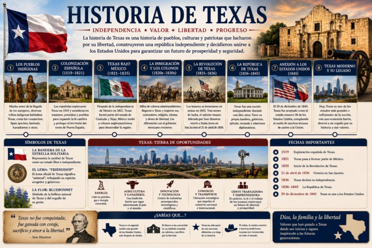

La historia de Texas es una de las más singulares de América del Norte. A lo largo de los siglos, este territorio pasó por el dominio de distintas naciones, fue una república independiente y finalmente se incorporó a los Estados Unidos.
Su historia está marcada por el espíritu de independencia, el desarrollo económico, la diversidad cultural y la defensa del autogobierno.
Actualmente, Texas es uno de los estados más grandes e influyentes de los Estados Unidos, con una economía que figura entre las mayores del mundo.
Los primeros habitantes
Mucho antes de la llegada de los europeos, el territorio estaba habitado por numerosos pueblos indígenas.
Entre ellos se encontraban:
- Comanches.
- Apaches.
- Caddo.
- Karankawa.
- Tonkawa.
- Wichita.
Cada uno desarrolló sus propias costumbres, formas de organización y modos de vida adaptados al clima y a las extensas llanuras texanas.
La colonización española
En 1519, los primeros exploradores españoles llegaron a la región.
Durante los siglos XVI y XVII, España estableció:
- Misiones religiosas.
- Presidios militares.
- Pequeños asentamientos.
El objetivo era evangelizar a los pueblos indígenas, proteger el territorio y consolidar la presencia española en el norte de Nueva España.
Muchas ciudades actuales de Texas tienen su origen en aquella etapa colonial.
Texas bajo México
En 1821, México obtuvo su independencia de España y Texas pasó a formar parte del nuevo país.
Para poblar la región, el gobierno mexicano permitió el establecimiento de colonos provenientes de los Estados Unidos.
Miles de familias llegaron buscando tierras para la agricultura y la ganadería.
Con el paso de los años surgieron diferencias políticas, culturales y administrativas entre muchos colonos y el gobierno mexicano.
La Revolución de Texas
En 1835 comenzó la Revolución de Texas.
Los colonos texanos reclamaban mayor autonomía y defendían el cumplimiento de la Constitución Federal mexicana de 1824.
Uno de los episodios más conocidos fue la Batalla de El Álamo, donde un pequeño grupo de defensores resistió el avance del ejército mexicano.
Aunque la batalla terminó con la derrota de los defensores, se convirtió en un símbolo del movimiento independentista.
La Batalla de San Jacinto
El momento decisivo llegó el 21 de abril de 1836, cuando el ejército texano, dirigido por Sam Houston, derrotó a las fuerzas del general Antonio López de Santa Anna en la Batalla de San Jacinto.
La victoria permitió consolidar la independencia de Texas.
Poco después se firmaron los Tratados de Velasco, que marcaron el fin del conflicto para los texanos, aunque su interpretación fue objeto de controversia entre las partes.
La República de Texas
Tras la independencia, nació la República de Texas, un Estado soberano que existió entre 1836 y 1845.
Durante ese período Texas contó con:
- Presidente.
- Congreso.
- Constitución.
- Ejército.
- Bandera nacional.
- Relaciones diplomáticas con diversos países.
Sam Houston fue el primer presidente de la nueva república.
La anexión a los Estados Unidos
Desde sus primeros años como república independiente, muchos ciudadanos favorecían la incorporación a los Estados Unidos.
Finalmente, el 29 de diciembre de 1845, Texas fue admitido como el estado número 28 de la Unión.
La anexión transformó profundamente el desarrollo político y económico del territorio.
Crecimiento y desarrollo
Durante la segunda mitad del siglo XIX y el siglo XX, Texas experimentó un extraordinario crecimiento.
Su economía se fortaleció gracias a:
- La agricultura.
- La ganadería.
- El petróleo.
- El comercio.
- Los ferrocarriles.
- La industria.
- La tecnología.
El descubrimiento de importantes yacimientos petroleros impulsó una etapa de gran expansión económica.
Texas en la actualidad
Hoy Texas es uno de los motores económicos de los Estados Unidos.
Destaca por su liderazgo en sectores como:
- Energía.
- Tecnología.
- Aeroespacial.
- Agricultura.
- Ganadería.
- Medicina.
- Educación.
- Manufactura.
Ciudades como Houston, Dallas, Austin, San Antonio y Fort Worth figuran entre las más dinámicas del país.
Símbolos de Texas
Texas conserva una fuerte identidad histórica.
Entre sus símbolos más conocidos se encuentran:
- La bandera de la Estrella Solitaria (Lone Star Flag).
- El lema estatal: Friendship.
- El Álamo.
- El Capitolio Estatal de Austin.
- La flor Bluebonnet.
- El longhorn texano.
Estos símbolos representan el orgullo y la historia del estado.
Conclusión
La historia de Texas refleja la evolución de un territorio que pasó por distintas etapas políticas hasta integrarse a los Estados Unidos.
Su experiencia como colonia, provincia mexicana, república independiente y estado de la Unión ha contribuido a formar una identidad única dentro del país.
Hoy Texas continúa desempeñando un papel fundamental en la economía, la ciencia, la energía y la cultura estadounidense.